PM prompt library
A public library of 49 product management prompts I use day to day, from naming a problem to writing release notes. Each one is written in the CRISPE structure and grouped by the job it does.
View on GitHub →Almost nine years in product, across EdTech, automotive and media. I prototype to find out what works before anyone commits to building it.
Not a list of features I shipped. Three times a decision mattered, and what it took to get it right.
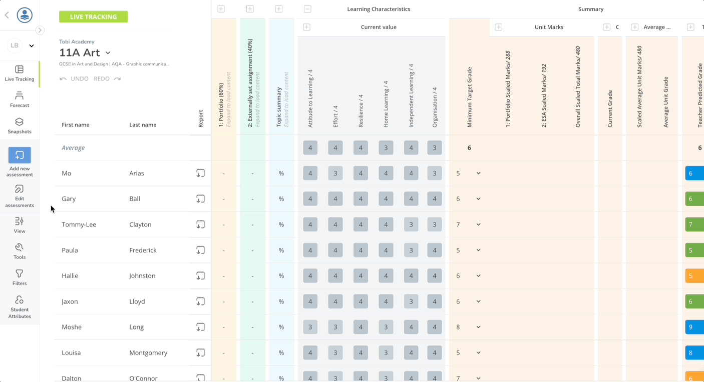
I prototyped the bespoke option the team wanted, proved it was the wrong investment, and shipped a simpler fix in a week instead of over a month.
Read the case study →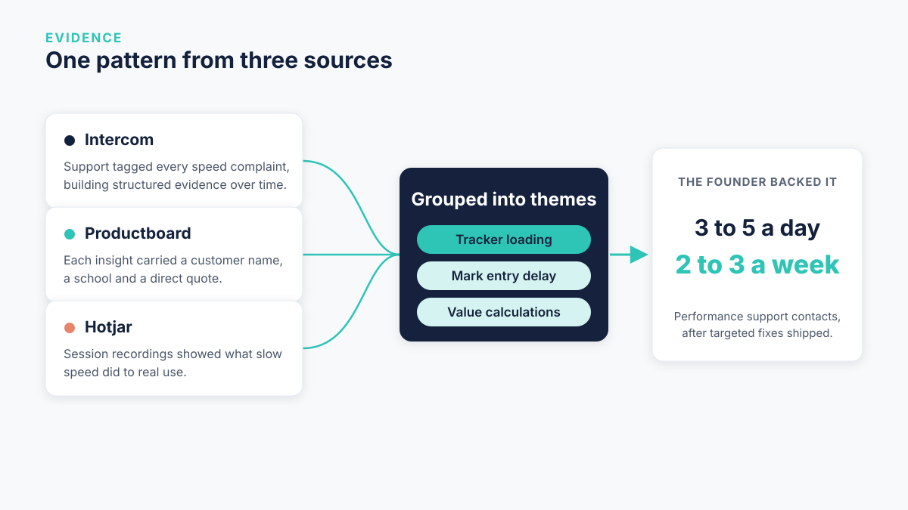
I built a data-backed case from three sources and won engineering time from a sceptical founder. Support contacts fell from 3 to 5 a day to 2 to 3 a week.
Read the case study →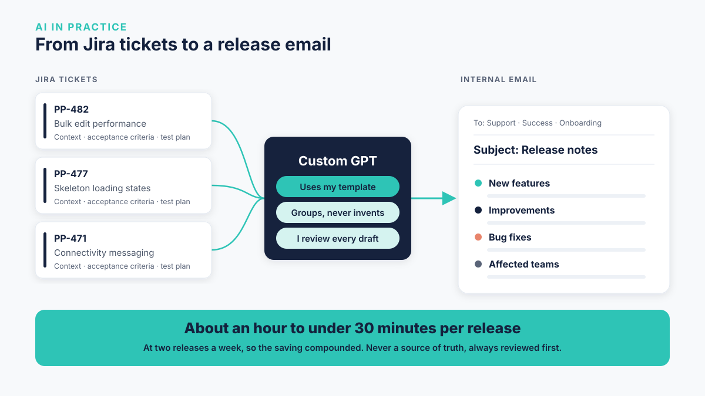
I built and constrained a GPT to draft internal release notes from Jira tickets. Drafting fell from an hour to under 30 minutes, at two releases a week.
Read the case study →Working tools I built myself to speed up real work. AI accelerated the building. The product thinking is mine.
A public library of 49 product management prompts I use day to day, from naming a problem to writing release notes. Each one is written in the CRISPE structure and grouped by the job it does.
View on GitHub →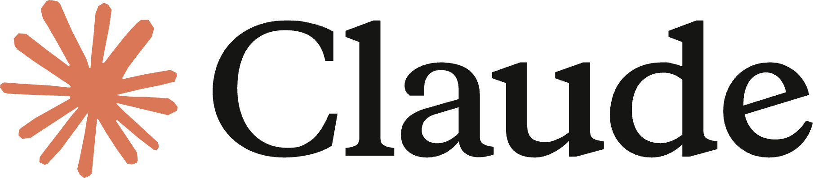
A working app against NASA's live API, built in under a day to test feasibility, with the API key held server-side.
View on GitHub →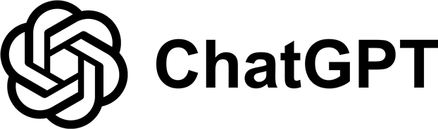
A custom GPT that turns well-written Jira tickets into structured internal release notes, constrained so it formats rather than invents.
Read the case study →A Claude Code plugin that researches a company and preps interview materials, so I walk in with real questions, not generic ones.
View on GitHub →A 40-question assessment based on Pierre Casse's research, built to show someone their own communication style.
View on GitHub →A personal task manager with Google Calendar sync, built in Flask and vanilla JavaScript to run my own week.
View on GitHub →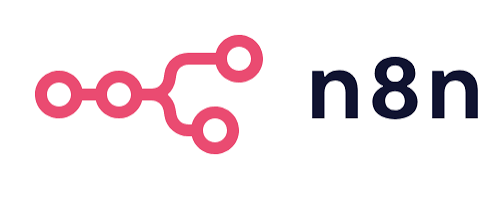
An n8n workflow that tracks developments in a market, ranks them, and sends a short digest. Built once in Zapier, then rebuilt to add quality gates.
Built on the AI Fast-Track ProgrammeEight weeks, tutor led, covering AI workflows, prompt engineering and responsible AI. I used it to build automations and apps that actually run.
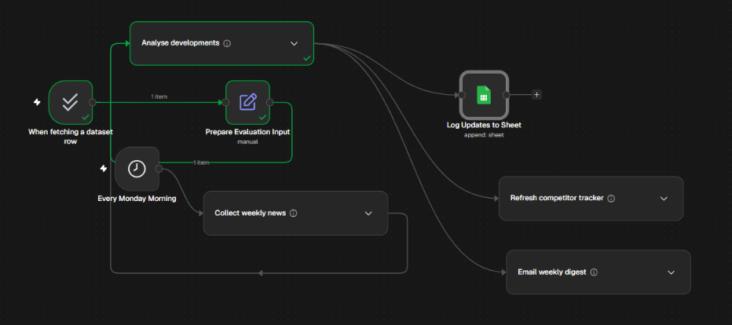
An n8n workflow I built to scan the cycling market, score each development and email a ranked digest. Eighteen nodes, published and running.
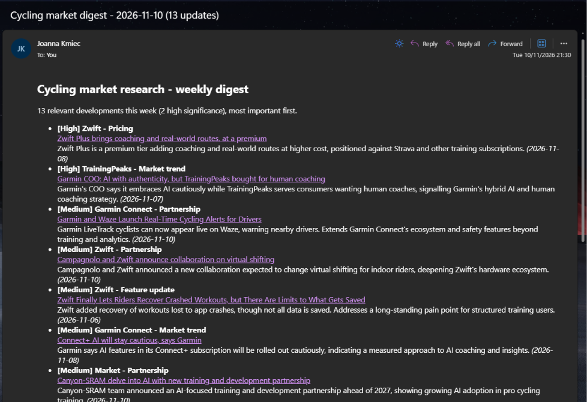
The digest that arrived on 10 November: thirteen developments that week, two flagged high, ranked with the most important first.
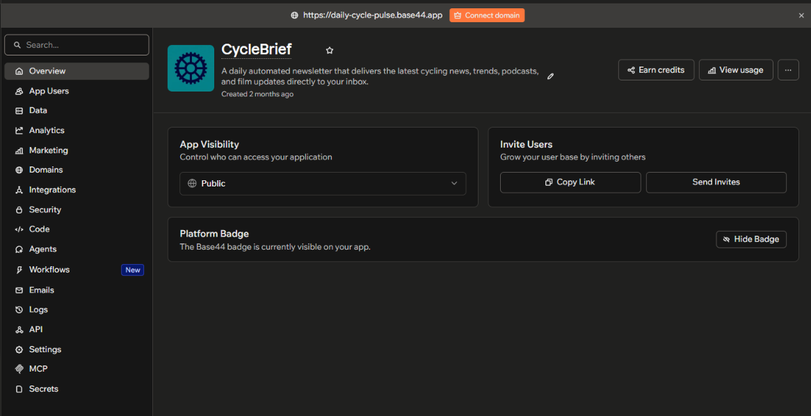
A newsletter app I built by prompt in Base44 and published to a live URL, pulling cycling news into a single daily brief.
The full course portfolio also covers prompt engineering, model comparison, bias and GDPR, and a product decision on when not to use AI at all.
Side projects where I own everything, from the first idea to the build.
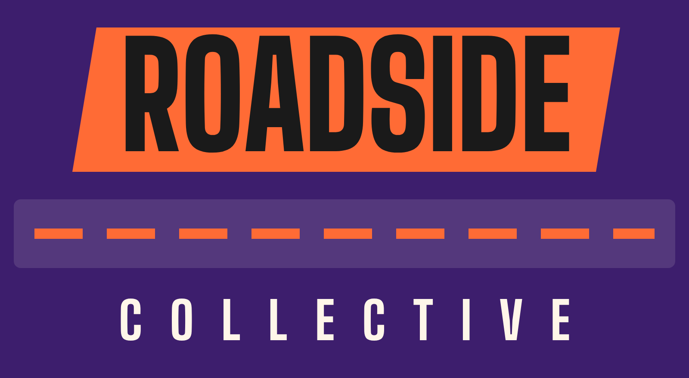
A not for profit community I started in Brighton. We host watch parties in local pubs for women's professional cycling, because more viewers bring more sponsors, which means better pay and more racing for women riders. Everyone is welcome and no cycling knowledge is needed.
I run it end to end: the positioning, the brand, the roadmap, and the build. I set the project up in Claude Code and pushed the first version to GitHub, then iterated directly in Lovable and built the live site there.
The first watch party is in the new year, for the UCI World Championships on Sunday 31 January 2027.
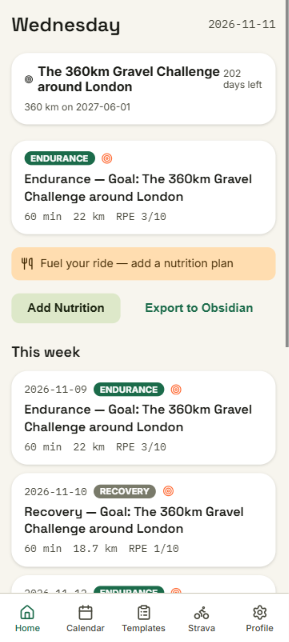
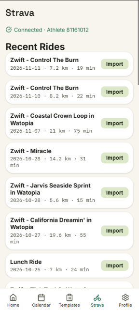
A training planner I am building for myself in Claude Code. It connects to Strava through OAuth, refreshes the access token on its own, and pulls my ride history onto a training calendar, sorting each activity into the plan.
The Strava secret stays on the Flask backend and never reaches the browser, and a ride that is already imported never lands twice. Small decisions, and the ones that decide whether an integration is safe to ship.
It also works out nutrition and carb intake for each session, with a toggle for whether I am training again the next day. I tested that on two real 100km events and it held up.
Flask · React PWA · Strava OAuth
I have spent almost nine years in product. For two of them I was the first product manager at Pupil Progress, a platform secondary schools use to track pupil progress. I owned the roadmap end to end alongside the CEO and CPO. The company grew from just over 100 schools to more than 400 while I was there, and retention held at 95%.
Before that I worked in automotive and media. I launched a mobile app adopted by nearly 1,000 car dealerships and moved 500 live customer websites onto a new CMS.
I build prototypes to find out an idea is wrong before anyone commits to building it. I build my own tools with AI, and I use it day to day for research and for the mechanical parts of the job. I keep humans in the loop and I start with discovery. AI that skips that step builds the wrong thing faster.